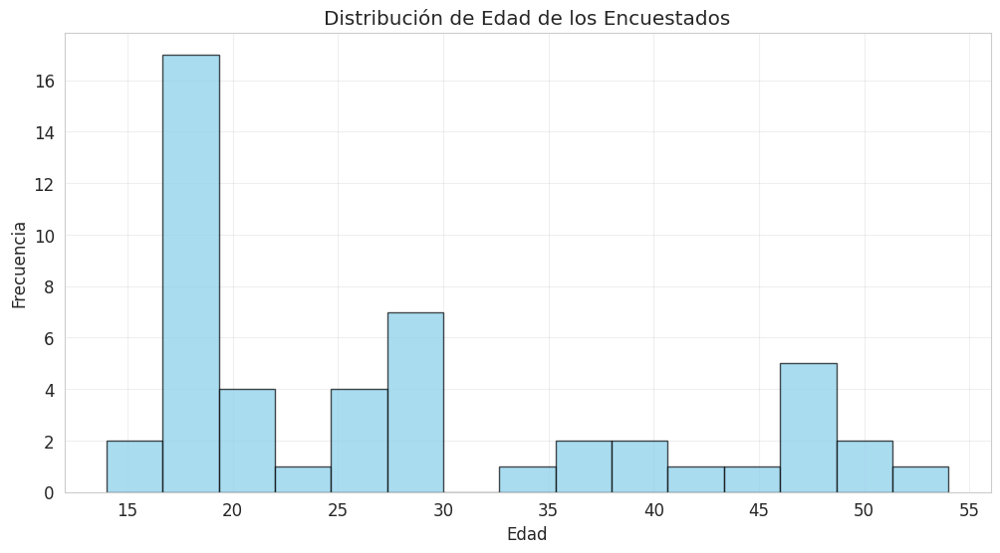
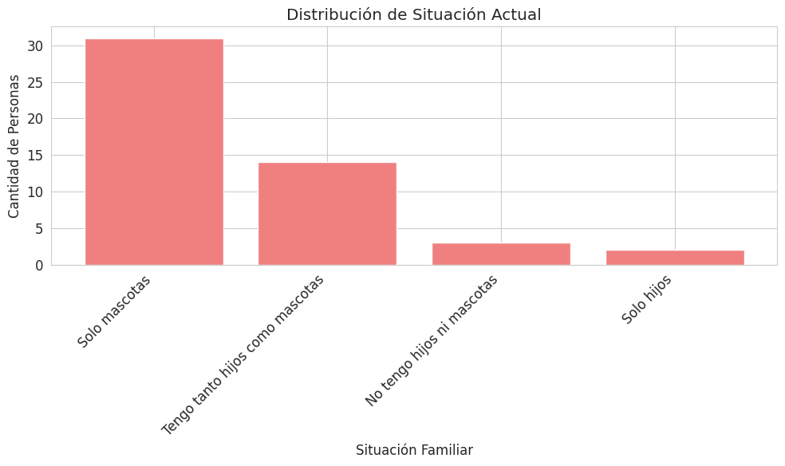
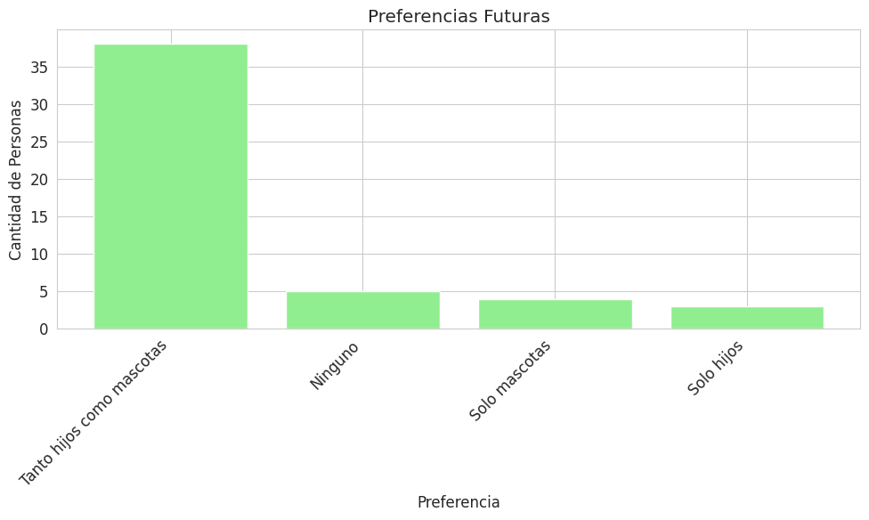
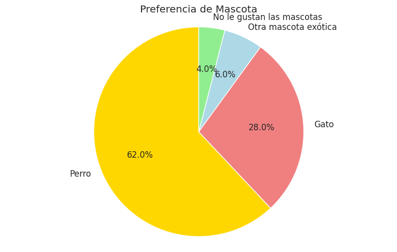
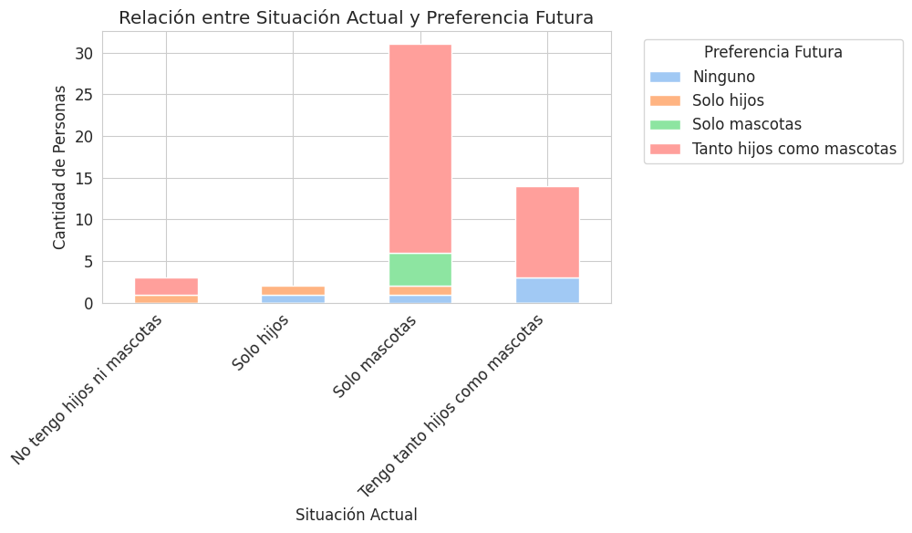
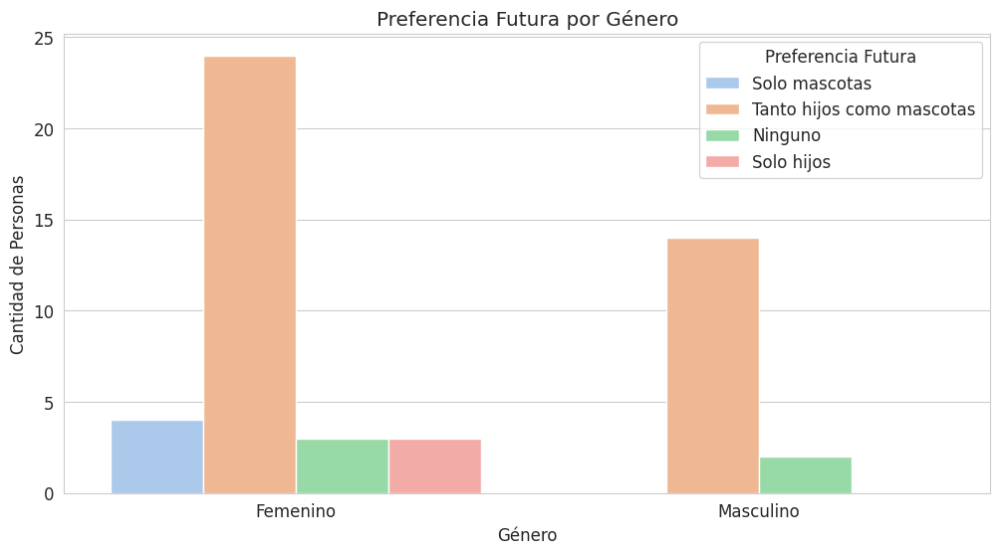

Acerca de la Encuesta
Este análisis explora la situación familiar y la tenencia de mascotas de los encuestados, buscando entender sus preferencias actuales y futuras. El estudio se basa en una muestra de 50 personas mayores de 17 años.
Metodología
Datos Relevantes
Visualizaciones de los Datos
Distribución de Edad
Situación Familiar Actual
Preferencia Futura
Preferencia de Mascota Única
Edad vs. Preferencia Futura
Situación Actual por Grupo de Edad
Análisis de Hipótesis
H1: “Las personas mayores prefieren hijos antes que mascotas.”
Las personas mayores (+35 años) no muestran una preferencia de hijos sobre mascotas; de hecho, el 63% de este grupo prefiere tener "Tanto hijos como mascotas" en el futuro.
H2: “Quienes tienen más hijos suelen tener menos mascotas.”
Se observa una tendencia inversa: a mayor número de hijos, el promedio de mascotas disminuye. Las familias con 1 hijo tienen un promedio de 2.8 mascotas, vs. 1.5 en familias con 3 o más hijos.
H3: “Las personas jóvenes prefieren perros antes que hijos.”
En el grupo de 18-25 años, el 72% tiene solo mascotas. Además, el 88% de los jóvenes prefiere al perro como su mascota ideal, mostrando una clara prioridad por los animales de compañía.
Muestra de Código Python
Para analizar los datos, se utilizó la librería Pandas en Python. A continuación, un fragmento del código empleado para la limpieza y preparación de los datos.
# Renombro columnas para facilitar el acceso
df = df.rename(columns={
'Edad': 'edad',
'¿Cuál es tu género?': 'genero',
'Idealmente, ¿qué te gustaría tener en el futuro?': 'preferencia_futura',
' Si tuvieras que elegir SOLO UNA mascota, ¿cuál sería?': 'mascota_preferida'
})
# Unifico las respuestas de hijos y mascotas que estaban en columnas separadas
df['hijos_actual'] = df['¿Cuántos hijos tienes?'].combine_first(df['¿Cuántos hijos tienes?.1'])
df['mascotas_actual'] = df['¿Cuántas mascotas tienes?'].combine_first(df['¿Cuántas mascotas tienes?.1'])
# Estandarizo respuestas de texto para la mascota preferida
def categorizar_mascota(respuesta):
respuesta = str(respuesta).lower()
if 'perro' in respuesta:
return 'Perro'
elif 'gato' in respuesta:
return 'Gato'
else:
return 'Otra'
df['mascota_categoria'] = df['mascota_preferida'].apply(categorizar_mascota)
Discusión Final
Dificultades Encontradas
- La estructura del formulario generó columnas de datos duplicadas.
- Algunas respuestas de texto libre requirieron recategorización manual.
- Conseguir una muestra amplia y diversa en poco tiempo fue un desafío.
Mejoras Futuras
- Optimizar el diseño del formulario para evitar duplicación.
- Usar más opciones predefinidas para facilitar el análisis.
- Ampliar la difusión para obtener una muestra más representativa.